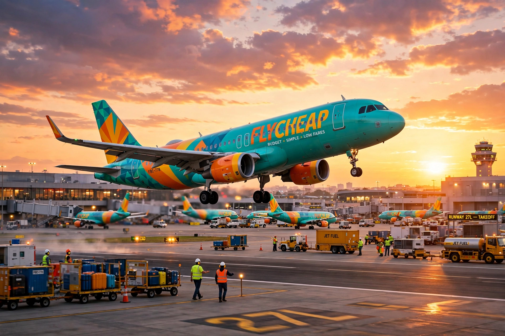

A low-cost carrier (LCC), also called a budget airline or discount airline, is an airline that operates with an especially high emphasis on minimising operating costs, offering low fares and charging for additional services. The model originated in the United States with Pacific Southwest Airlines and Southwest Airlines.
Typical features include a single aircraft type, a single passenger class, high aircraft utilisation with quick turnarounds, point-to-point routes avoiding hubs, use of secondary airports, no free in-flight catering, unreserved seating historically, and direct online sales. Ancillary revenue from baggage, seat selection, food and priority boarding is central.
Following US deregulation in 1978, Southwest expanded the model. In Europe, Ryanair and easyJet adopted it in the 1990s. In Asia, AirAsia popularised low-cost travel from Malaysia. Long-haul low-cost ventures have had mixed success.
LCCs increased accessibility and competition but have been criticised for fees, labour practices, environmental impact from induced demand, and service charges. Legacy carriers responded with basic-economy fares and their own low-cost subsidiaries.